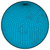

latitude
property

Source: Wikipedia
Wikipedia Page (Something wrong with this association? Let us know.)
Wikidata Page (Something wrong with this association? Let us know.)
Occurs in:
- drainage-basin_centroid__latitude
- drainage-basin_outlet_river-bank~left__latitude
- drainage-basin_outlet_river-bank~right__latitude
- drainage-basin_outlet_center__latitude
- channel_entrance_center__latitude
- channel_exit_center__latitude
- river-delta_apex__latitude
- river-delta_channel~main_entrance_center__latitude
- river-delta_distributary_outlet_center__latitude
- river-delta_distributary_outlet_side~left__latitude
- river-delta_distributary_outlet_side~right__latitude
- earth_interior_earthquake_hypocenter__latitude
- earth_magnetic-north-pole__latitude
- earth_magnetic-south-pole__latitude
- earth_surface_earthquake_epicenter__latitude
- earth_surface_seismic-station__latitude
- earth_surface_viewpoint__latitude
- earthquake_hypocenter__latitude
- glacier-terminus_side~left__latitude
- glacier-terminus_side~right__latitude
- land_surface__latitude
- model_grid_cell_center__latitude
- model_grid_cell_centroid__latitude
- model_grid_cell_edge~east__latitude
- model_grid_cell_edge~north__latitude
- model_grid_cell_edge~south__latitude
- model_grid_edge~north__latitude
- model_grid_edge~south__latitude
- projectile_trajectory_origin__latitude
- projectile_trajectory_target__latitude
- sea_bottom_surface__latitude
- sea_surface__latitude
- sea_surface_water_tide_constituent-2mk3_amphidromic-points__latitude
- earth_interior_earthquake_focus__latitude
- model_grid_cell_edge_center__latitude
- model_grid_cell_face_centroid__latitude
- model_grid_node__latitude
- model_grid_dual-cell_centroid__latitude
- model_grid_dual-cell_edge_center__latitude
- model_grid_dual-cell_face_centroid__latitude
- model_grid_dual-node__latitude
- model_grid_primary-cell_centroid__latitude
- model_grid_primary-cell_edge_center__latitude
- model_grid_primary-cell_face_centroid__latitude
- model_grid_primary-node__latitude
- model_grid_virtual-north-pole__latitude
- field__latitude
- weather-station__latitude